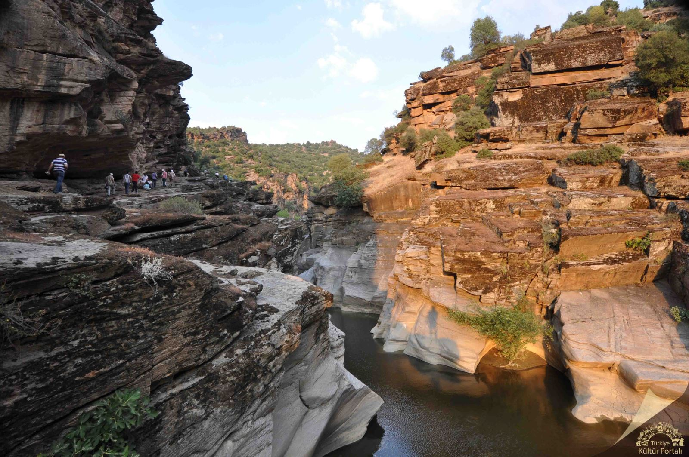

Aşıklar Diyarı Uşak

Uşak Taşyaran Vadisi
Some representative placeholder content for the second slide.

Uşak Atatürk'ün Evi
Some representative placeholder content for the third slide.
Uşak Tarihi
Antik dönemdeki adı "Temenothyrea" olan Uşak, İç Ege Bölgesinde Batı ve Orta Anadolu'yu birbirine bağlayan bölgede yer almaktadır. M.Ö. 2000 de Anadolu’da ilk siyasi birliği kuran Hititlerin egemenliğine giren Uşak daha sonraları Firiglerin,Lidyalaıların daha sonra ise Pers İmparatorluğu, Roma ve Osmanlı Devletinin egemenliğine girmiştir.Uşak nüfusu
Şubat 2021 TÜİK verilerine göre il nüfusu 369.433'dür. 6 İlçe, 11 belediye, bu belediyelerde 72 mahalle, ayrıca 245 köy bulunmaktadır.Genel konumu
Uşak ili komşu iller olan Kütahya ve Afyonkarahisar gibi Ege Bölgesi ile İç Anadolu Bölgesi arasında bir geçit oluşturan İç Batı Anadolu Bölümü üzerinde yer alır. Genel olarak ilin kuzey, kuzeydoğu ve doğu kesimleri dağlarla ve güneybatısı yüksekliği 1000 metrenin altında olan ovalarla kaplıdır.İl toprakları 5341 km²'lik yüzölçümüyle Türkiye alanının yaklaşık % 0,7'sini kaplar.İl topraklarında ağırlıklı yeri platolar tutar.Uşakta Gezilecek Yerler
Ulubey Kanyonu
Ulubey Kanyonu (Ulubey Canyon) Uşak ilinin Ulubey ilçesi sınırları içerisindedir. ABD'deki Arizona Eyaleti sınırları içersinde bulunan Büyük Kanyon'dan sonra dünyanın en büyük 2. kanyonudur. Bugüne kadar bilinmeyen kanyon, Ulubey Çayı ve Banaz Çayı boyunca devam eden bir ana kanyon ile buna bağlanan onlarca büyük yan kanyonlardan oluşur.Kanyona toprak yollardan iyi bir arazi aracı ile inebilirsiniz veya belirlediğiniz bir güzergahta grup halinde yürüyüş yapabilirsiniz. Banaz çayında sal sporları, kayalıklarda tırmanış, kanyon boyunca balonla gezinti yapılabilir.Kanyon bölgesindeki bungalov evlerde kalabilir ya da kanyona hakim tepelerde çadır kurabilirsiniz.
Taşyaran Vadisi
Taşyaran Vadisi; su, rüzgâr ve tektonik hareketler sonucu oluşmuştur. Vadiyi kaplayan ve zeminden başlayarak farklı renklere bürünen kayalar, bir ressamın renk paleti gibi görünmektedir.Taşyaran Vadisi tabiat Parkı’nda piknik alanları, seyir terası, gözlem kulesi, tuvaletler, kamelyalar, büfe ve çay kahve içebileceğiniz yer var. Girişten sonra Taşyaran Vadisi’ne inmek için doğal yapıya uygun taş merdivenlerden aşağı iniyorsunuz. Vadi, yaklaşık 2 bin 500 metre uzunluğunda bir yürüyüş güzergahına sahiptir.
Clandıras Köprüsü
Resmi kaynaklarda Cılandıras olarak adlandırılan Clandras Köprüsü, Uşak’ın Karahallı ilçesinde yer almakta. Banaz Çayı üzerine 2500 yıl önce Frigyalılar tarafından yaptırılan Tarihi Clandras Köprüsü, aslında bir su kemeri. Köprünün ilginç özelliklerinden biri, iki tarafınında dağ kayalığına dayandırılmış olması. Clandras Köprüsüne ait taşların yüzleri kalemle işlenmiş. Köprünün kemeri ise kasnak şeklinde.Köprünün uzunluğu 24 metre ve derinliği ise 17 metre. Köprünün hangi amaçla yapıldığına dair bilgi günümüze ulaşmamış.Köprünün yanında Karahallı Elektrik Santrali vardır.
Blaundus Antik Kenti
Blaundus; Büyük İskender’in Anadolu Seferleri’nden sonra Makedonya’dan gelenler tarafından kurulmuş, şehir halkının kendilerine Makedonyalı Blaundus adının verdiği söylenmektedir. Büyük İskender’den sonra Bergama Krallığına ardından da Roma İmparatorluğuna bağlanan kentini, Roma döneminde önemi artmıştır. Derin vadilerle çevrili bir yarımada üzerinde yer alan kentin önemli yapıları arasında kale, tapınaklar, tiyatro, stadyum ve kaya mezarları bulunmaktadır.
Uşak Atatürk ve Etnografya Müzesi
Uşak Atatürk ve Etnografya Müzesi hakkında bilgi vermek gerekirse, müze 1978 yılından beri halka hizmet vermekte. Müzenin bir diğer adı ise Atatürk Evi olarak geçmekte. Bunun nedeni ise Kurtuluş Savaşının ilk dönemlerinde Mustafa Kemal Atatürk’ün bir süre bu evde kalmış olması.
Pepuza Antik Kenti
Pepuza kentinin kuruluşu Roma dönemine dayanmaktadır; Hristiyanlıkta Montanizm mezhebi mensupları bu bölgede yaşamışlardır, Montanizmin merkezi kabul edilen bu şehir daha sonra Bizans zamanında yerle bir edilmiştir. Bu nedenle hem dini özellikler hem de siyasi özellikler taşımaktadır. Yapılan çalışmalarda toprak altında şehrin kalıntıları bulunduğu tespit edilmiş ancak henüz araştırmalar devam ettiğinden dolayı kazılarının yapılmadığı bilinmektedir.